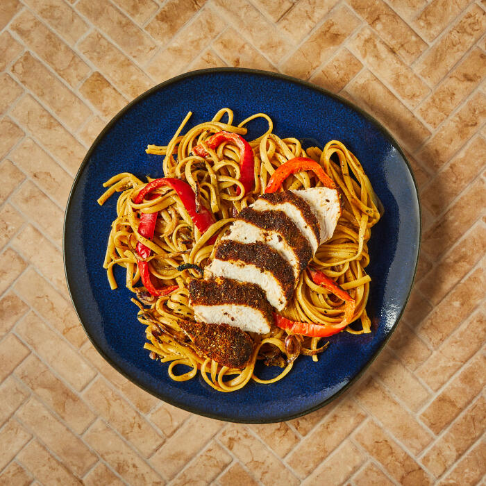

Creamy Cajun Chicken and Pepper Linguine

Description
Punchy Cajun-inspired seasoning brings the heat to this fiery fusion dish.
You'll roast spiced chicken breast, and serve on a bed of creamy linguine
with sweet pointed pepper, onion and garlic.
Ingredients
- Ground coriander (1tsp)
- Ground cumin (1tsp)
- Red onion
- Cayenne pepper (0.5tsp)
- Ground smoked paprika (1tsp)
- Dried oregano (1tsp)
- Chicken stock mix (11g)
- British chicken breast portions (2pcs)
- Garlic clove
- Chinese rice wine (15ml)
- Soft cheese (50g)
- Sweet pointed pepper
- Linguine (190g)
Steps
-
Preheat the oven to 220°C/ 200°C (fan)/ gas 7 Before you start cooking,
take your chicken out of the fridge, open the packet and let it air. Add
your ground smoked paprika, cayenne pepper (can't handle the heat? Go
easy!), ground coriander, dried oregano, ground cumin, a pinch of sugar
and salt and a generous grind of black pepper to a plate and give
everything a good mix up – this is your Cajun-style spice mix.
-
Press one side of your chicken breast portion[s] into the Cajun-style
spice mix and save the rest of the spice mix for later – this is your
Cajun-style spiced chicken.
-
Heat a large, wide-based pan (preferably non-stick) with a drizzle of
vegetable oil over a medium-high heat. Once hot, add the Cajun-style
spiced chicken, spice-side down, and cook for 3 min or until slightly
charred, then once charred, transfer the chicken, spice-side up, to a
baking tray and reserve the pan for later Put the tray in the oven for
15 min or until the chicken is cooked through (no pink meat!) and the
juices run clear.
-
Meanwhile, boil a kettle Peel and finely slice your red onion[s]. Peel
and finely chop (or grate) your garlic. Deseed your sweet pointed
pepper[s] (scrape the seeds and pith out with a teaspoon) and cut into
thin strips.
-
Return the reserved pan to a medium heat with a drizzle of vegetable oil
Once hot, add the sliced red onion, chopped garlic, pepper strips and
remaining Cajun-style spice mix and cook for 8-10 min or until starting
to soften.
-
Add your linguine to a pot of boiled water with a large pinch of salt
and bring to the boil over a high heat. Cook the linguine for 8-10 min
or until cooked with a slight bite, then drain it, reserving a cup of
starchy pasta water. Reboil half a kettle. Dissolve your chicken stock
mix and soft cheese in 200ml [260ml] [340ml] boiled water – this is your
creamy stock.
-
Once the veg has softened, add your Chinese rice wine and cook for 30
secs or until evaporated. Add the creamy stock and cook for 2-3 min
further or until thickened. Once thickened, add the drained linguine and
give everything a good mix up – this is your creamy Cajun-style pepper
linguine. Tip: Add a splash of the starchy pasta water if it's looking a
little dry. On a clean board, slice the cooked spiced chicken finely
Serve the sliced spiced chicken over the creamy Cajun-style pepper
linguine. Season with a crack of black pepper. Enjoy!
Home